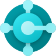
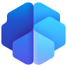
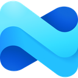
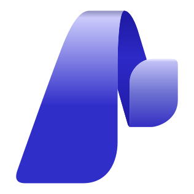
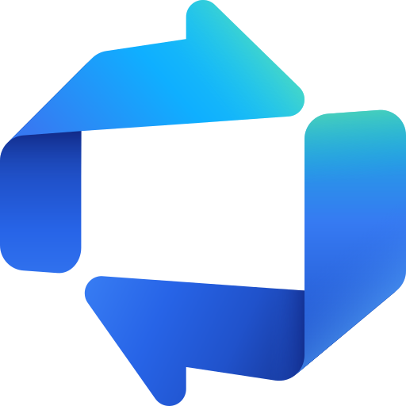

Bridge your business to the Microsoft cloud.
Plan, build and run on Dynamics 365, Power Platform and Azure with one accountable team.
We implement CRM and ERP, modernize your workplace with Microsoft 365 and Copilot, engineer multi-tenant .NET products, and keep everything running with managed services and on-demand specialists.
One partner across CRM, ERP, the modern workplace, cloud and custom code.
From first workshop to steady state.
Dynamix Bridge is a Microsoft-focused software house. Our consultants configure, our developers write the plugins, integrations and APIs, and our support team keeps it all healthy after go-live.
Whether you need a full Dynamics 365 rollout, a Copilot-ready SharePoint, a SaaS platform on .NET, or two extra developers next week, you deal with one team that understands the whole stack. More about us
Every app, every cloud, one team.
Pick a platform to see each product under its umbrella and how we deliver it, from first assessment to long-term support.
Dynamics 365
Customer engagement (CRM) and finance & operations (ERP) apps on one platform.
Implementation
Workshops, fit-gap, configuration and go-live on a proven delivery framework, with data migration tested before cut-over. Learn more
Migration & upgrades
Move from on-premises, legacy systems or another tenant with a rehearsed plan and a predictable cut-over. Learn more
Customization & integration
Plugins, custom APIs, PCF controls, Azure Functions and connectors that are source-controlled and supportable. Learn more
Managed support
SLA-backed support, enhancements and release-wave readiness after go-live. Learn more
Staff augmentation
Add certified consultants or developers to your own team, by the month. Learn more
Free assessment
A no-cost review of your current setup with prioritized recommendations. Learn more
Under the Dynamics 365 umbrella

Power Platform
Low-code apps, automation, portals, analytics and AI agents on Dataverse.
Implementation
Workshops, fit-gap, configuration and go-live on a proven delivery framework, with data migration tested before cut-over. Learn more
Migration & upgrades
Move from on-premises, legacy systems or another tenant with a rehearsed plan and a predictable cut-over. Learn more
Customization & integration
Plugins, custom APIs, PCF controls, Azure Functions and connectors that are source-controlled and supportable. Learn more
Managed support
SLA-backed support, enhancements and release-wave readiness after go-live. Learn more
Staff augmentation
Add certified consultants or developers to your own team, by the month. Learn more
Free assessment
A no-cost review of your current setup with prioritized recommendations. Learn more
Under the Power Platform umbrella

Microsoft 365
The modern workplace: content, collaboration, Copilot and security.
Implementation
Workshops, fit-gap, configuration and go-live on a proven delivery framework, with data migration tested before cut-over. Learn more
Migration & upgrades
Move from on-premises, legacy systems or another tenant with a rehearsed plan and a predictable cut-over. Learn more
Customization & integration
Plugins, custom APIs, PCF controls, Azure Functions and connectors that are source-controlled and supportable. Learn more
Managed support
SLA-backed support, enhancements and release-wave readiness after go-live. Learn more
Staff augmentation
Add certified consultants or developers to your own team, by the month. Learn more
Free assessment
A no-cost review of your current setup with prioritized recommendations. Learn more
Under the Microsoft 365 umbrella

Microsoft Azure
Cloud infrastructure, integration, data and AI on Azure.
Implementation
Workshops, fit-gap, configuration and go-live on a proven delivery framework, with data migration tested before cut-over. Learn more
Migration & upgrades
Move from on-premises, legacy systems or another tenant with a rehearsed plan and a predictable cut-over. Learn more
Customization & integration
Plugins, custom APIs, PCF controls, Azure Functions and connectors that are source-controlled and supportable. Learn more
Managed support
SLA-backed support, enhancements and release-wave readiness after go-live. Learn more
Staff augmentation
Add certified consultants or developers to your own team, by the month. Learn more
Free assessment
A no-cost review of your current setup with prioritized recommendations. Learn more
Under the Microsoft Azure umbrella


Microsoft Fabric
Unified analytics: data engineering, warehousing and Power BI in one platform.
Implementation
Workshops, fit-gap, configuration and go-live on a proven delivery framework, with data migration tested before cut-over. Learn more
Migration & upgrades
Move from on-premises, legacy systems or another tenant with a rehearsed plan and a predictable cut-over. Learn more
Customization & integration
Plugins, custom APIs, PCF controls, Azure Functions and connectors that are source-controlled and supportable. Learn more
Managed support
SLA-backed support, enhancements and release-wave readiness after go-live. Learn more
Staff augmentation
Add certified consultants or developers to your own team, by the month. Learn more
Free assessment
A no-cost review of your current setup with prioritized recommendations. Learn more
Software built for scale.
When off-the-shelf stops fitting, we build. Multi-tenant platforms, microservices and the web and mobile apps your customers use every day.
Multi-tenant .NET applications
One codebase serving every customer, with tenant isolation, onboarding, plans and usage billing designed in from the start.
- ASP.NET Core
- Tenant isolation
- Azure SQL
- Entra ID
Microservices architecture
Domain services that deploy independently, talk through events, and scale on containers with full observability.
- AKS
- Service Bus
- gRPC & REST
- CI/CD
Mobile & web development
Customer, partner and field apps that share identity and APIs with your Dynamics 365 and Azure back end.
- React
- Angular
- Flutter
- .NET MAUI
Hand us the outcome, or add us to your team.
Managed services take responsibility for keeping systems running. Staff augmentation gives you skilled people under your direction. Many clients use both.
IT managed services
We own the run: monitoring, tickets, patching and small enhancements against agreed SLAs, with a monthly report you can read in five minutes.
- Dynamics 365 Support (AMS)
- Power Platform CoE
- Microsoft 365 Administration
- 24/7 Monitoring
- Service Desk L1–L3
- Backup & Disaster Recovery
Staff augmentation
Vetted Microsoft and .NET specialists join your stand-ups and your backlog, from a single expert to a dedicated pod with a lead and QA.
- D365 Functional Consultants
- D365 Technical Developers
- Power Platform Developers
- .NET & Azure Engineers
- Web & Mobile Developers
- QA & Business Analysts
Four stages, no surprises.
Every engagement follows the same path, sized to the project. A Power Apps build may move through it in weeks; an ERP rollout takes longer.
Discover
Workshops with your users, a fit-gap against standard features, and a scoped plan with costs.
Design
Solution architecture, data model, integrations and security roles, agreed before build.
Build
Sprints with demos every two weeks, automated deployments and tested data migration.
Run
Go-live support, training, then managed services or a clean handover to your team.
Let's build your bridge.
Tell us what you're trying to connect. A 30-minute call is usually enough to tell whether Dynamics 365, Power Platform, custom development or a mix is the right fit.
- No-obligation discovery call
- Free Dynamics 365 health check
- NDA available before we see your data